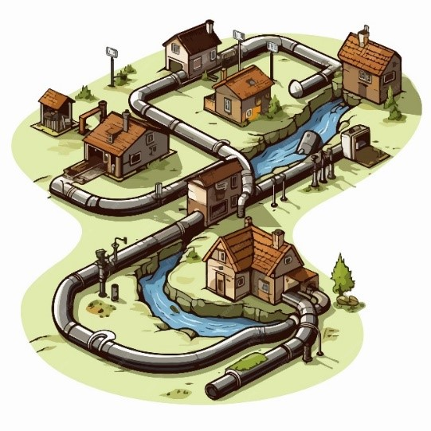

🚰 Limpieza de Alcantarillas
Proyecto enfocado en reducir inundaciones mediante limpieza y mantenimiento preventivo del sistema de alcantarillado.
Ver proyectoProyecto de Jesús Castro Vargas | Asesor: Isidro González Vázquez | Grupo: M23C2G52-023 Generación 52
Proyecto enfocado en reducir inundaciones mediante limpieza y mantenimiento preventivo del sistema de alcantarillado.
Ver proyecto